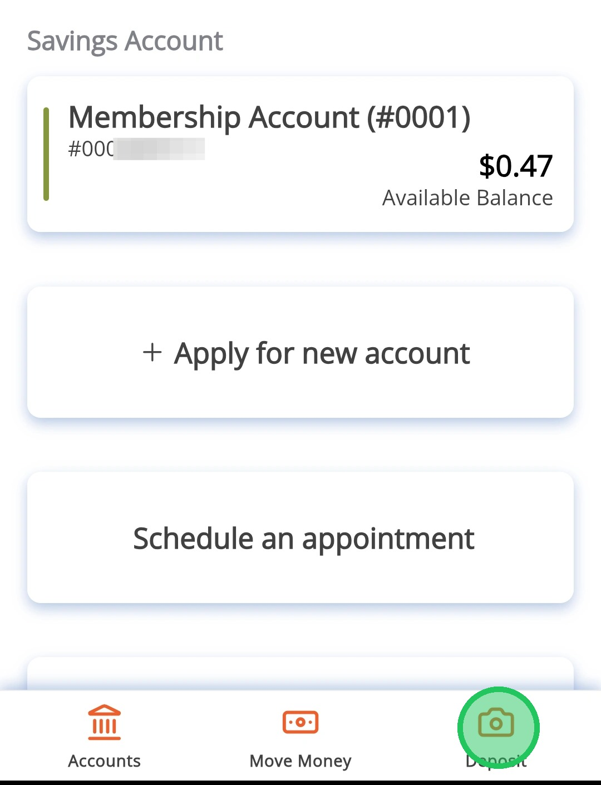
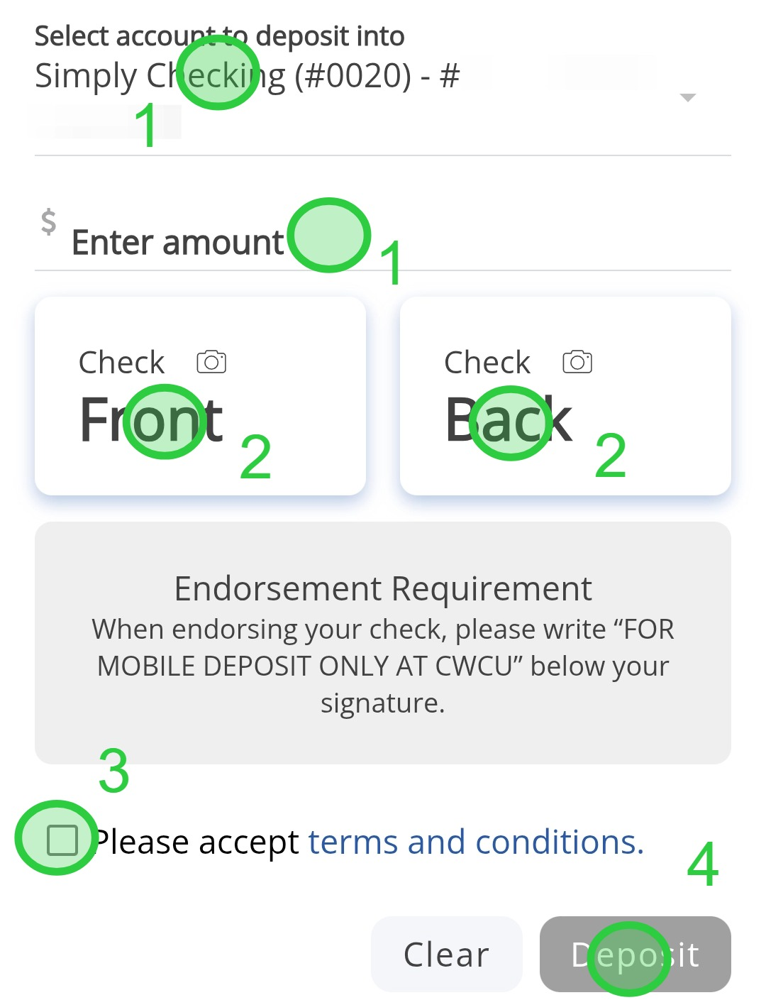
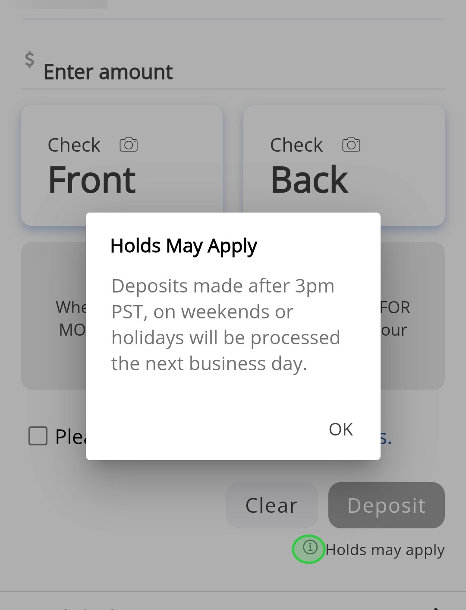
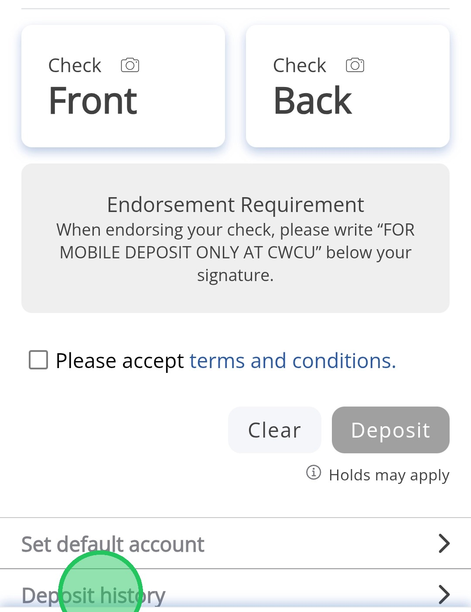
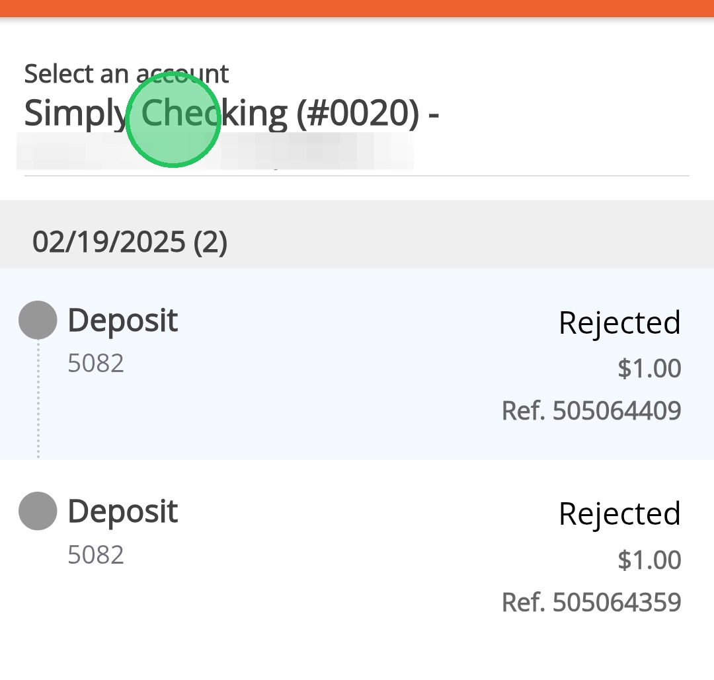

Making a Mobile Deposit
This guide is designed to help you make a mobile deposit on the CW Banking app, and also show how to view mobile deposit history.
1
Tap the Deposit icon

2
- Select the account for the deposit and enter the check amount.
- Take photos of the front and back of the check.
- Check the box to accept the terms and conditions.
- Tap "Deposit" to finish.

Make sure your check is properly endorsed or it may be rejected. The endorsement needs to read "FOR MOBILE DEPOSIT ONLY AT CWCU" below your signature.
3
Tap the i next to "Holds may apply" for deposit processing info.

You'll get email notifications when your deposit is received, approved, or rejected.
4
Tap Deposit History to view all your mobile deposit statuses.

5
Switch accounts at the top to view deposit history for different accounts. Status, amount, and reference number are shown for each deposit.
